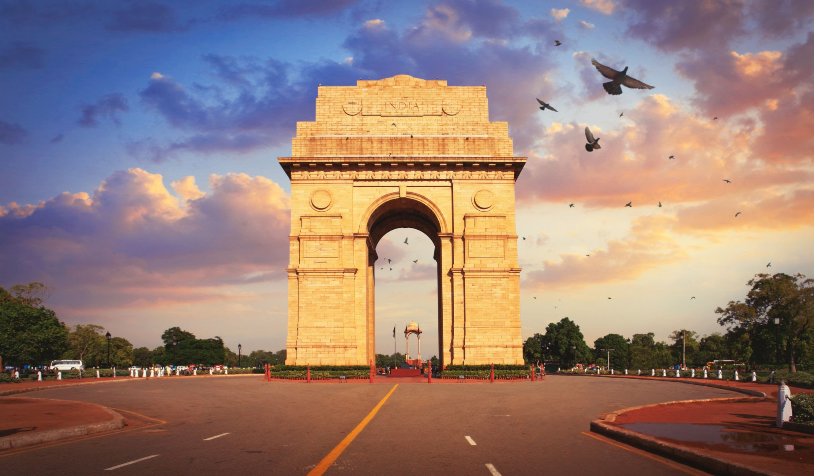
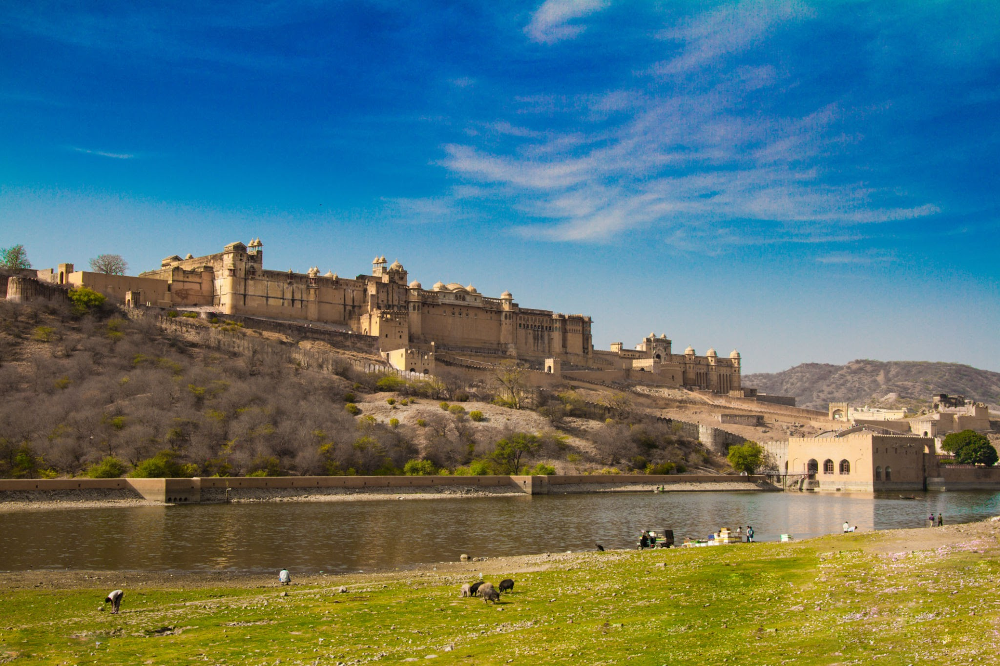
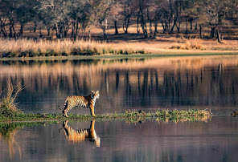
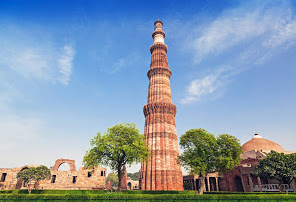
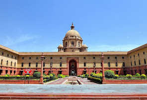

S A F A R I
ATHITI DEVO BHAV
LET'S TOUR TO INDIA. INDIA'S FAMOUS TOURIST PLACES

TAJ MAHAL
The Taj Mahal is an ivory-white marble mausoleum on the south bank of the Yamuna river in the Indian city of Agra.
It was commissioned in 1632 by the Mughal emperor Shah Jahan to house the tomb of his favourite wife, Mumtaz Mahal; it also houses the tomb of Shah Jahan himself.
The tomb is the centrepiece of a 17-hectare complex, which includes a mosque and a guest house, and is set in formal gardens bounded on three sides by a crenellated wall.
Construction of the mausoleum was essentially completed in 1643, but work continued on other phases of the project for another 10 years. The Taj Mahal complex is believed to have been completed in its entirety in 1653 at a cost estimated at the time to be around 32 million rupees, which in 2020 would be approximately 70 billion rupees.
The construction project employed some 20,000 artisans under the guidance of a board of architects led by the court architect to the emperor, Ustad Ahmad Lahauri.

INDIA GATE
The India Gate is a war memorial located astride the Rajpath, on the eastern edge of the "ceremonial axis" of New Delhi, formerly called Kingsway.
It stands as a memorial to 70,000 soldiers of the British Indian Army who died in between 1914–1921 in the First World War, in France, Flanders, Mesopotamia, Persia, East Africa, Gallipoli and elsewhere in the Near and the Far East, and the third Anglo-Afghan War.
13,300 servicemen's names, including some soldiers and officers from the United Kingdom, are inscribed on the gate.
Designed by Sir Edwin Lutyens, the gate evokes the architectural style of the triumphal arch such as the Arch of Constantine, in Rome, and is often compared to the Arc de Triomphe in Paris, and the Gateway of India in Mumbai.
Following the Bangladesh Liberation war in 1972, a structure consisting of a black marble plinth with a reversed rifle, capped by a war helmet and bounded by four eternal flames, was built beneath the archway.

AMBER PALACE
Amer Fort or Amber Fort is a fort located in Amer, Rajasthan, India. Amer is a town with an area of 4 square kilometres located 11 kilometres from Jaipur, the capital of Rajasthan
The town of Amer and the Amber Fort were originally built by the Meena's, and later it was ruled by Raja Man Singh I. Located high on a hill, it is the principal tourist attraction in Jaipur.
Amer Fort is known for its artistic style elements. With its large ramparts and series of gates and cobbled paths, the fort overlooks Maota Lake, which is the main source of water for the Amer Palace. Mughal architecture greatly influenced the architectural style of several buildings of the fort.
Constructed of red sandstone and marble, the attractive, opulent palace is laid out on four levels, each with a courtyard.

RANTHAMBORE NATIONAL PARK
Ranthambhore National Park or Ranthambhore is a national park in northern India, initially covering 282 km² at the time it was formed.
Ranthambhore was established as the Sawai Madhopur Game Sanctuary in 1955 by the Government of India and was declared one of the Project Tiger reserves in 1973. Ranthambhore became a national park on 1 November 1980. In 1984, the adjacent forests were declared the Sawai Man Singh Sanctuary and Keladevi Sanctuary. In 1992, the Tiger Reserve was expanded to include the adjoining Keladevi Sanctuary in the north and Sawai Mansingh sanctuary to the south along with other forests
Today it covers an area of 1334 sq. km. Ranthambhore wildlife sanctuary is known for its Bengal tigers, and is a popular place in India to see these animals in their natural jungle habitat
Tigers can be easily spotted even in the daytime. The best times for tiger sightings at Ranthambhore National Park are deemed to be in November and May.

QUTUB MINAR
The Qutb Minar, also spelled as Qutub Minar and Qutab Minar, is a minaret and "victory tower" that forms part of the Qutb complex which is built on hindu temple, a UNESCO World Heritage Site in the Mehrauli area of Delhi, India.
Qutb Minar was 73-metres tall before the final, fifth section was added after 1369. The tower tapers, and has a 14.3 metres base diameter, reducing to 2.7 metres at the top of the peak.
It contains a spiral staircase of 379 steps. Its closest comparator is the 62-metre all-brick Minaret of Jam in Afghanistan, of c.1190, a decade or so before the probable start of the Delhi tower. The surfaces of both are elaborately decorated with inscriptions and geometric patterns; in Delhi the shaft is fluted with "superb stalactite bracketing under the balconies" at the top of each stage.
In general minarets were slow to be used in India, and are often detached from the main mosque where they exist.

GANGES
The Ganges, or Ganga, is a trans-boundary river of Asia which flows through India and Bangladesh.
The 2,601 km river originates from the Gangotri Glacier of western Himalayas in the Indian state of Uttarakhand, and flows south and east through the Gangetic Plain of India and Bangladesh, eventually emptying into the Bay of Bengal.
The Ganges is a lifeline to millions who live along its course. It is a sacred river and worshipped as the goddess Ganga in Hinduism
It has been important historically; many former provincial or imperial capitals have been located on its banks. The Ganges is threatened by severe pollution. This poses a danger not only to humans but also to animals; the Ganges is home to approximately 140 species of fish and 90 species of amphibians
The river also contains reptiles and mammals, including critically endangered species such as the Gharial and South Asian river dolphin.

SWARAJ DWEEP
Havelock Island, officially Swaraj Island, is the one of the largest islands that comprise a chain of islands to the east of Great Andaman in the Andaman Islands.
It belongs to the South Andaman administrative district,
part of the Indian union territory of Andaman and Nicobar Islands.
The island is 41 km northeast of the capital city, Port Blair.
Havelock Island is part of Ritchie’s Archipelago, in India’s Andaman Islands. It’s known for its dive sites and beaches, like Elephant Beach, with its coral reefs. Crescent-shaped Radhanagar Beach is a popular spot for watching the sunset.
On the island’s east side, rocky sections mark long, tree-lined Vijaynagar Beach. The island's forested interior is home to birdlife such as white-headed mynas and woodpeckers.

DARJEELING HIMALAYAN RAILWAY
The Darjeeling Himalayan Railway, also known as the DHR or the Toy Train, is a 2 ft gauge railway that runs between New Jalpaiguri and Darjeeling in the Indian state of West Bengal. Built between 1879 and 1881, it is about 88 km long.
It climbs from about 100 m above sea level at New Jalpaiguri to about 2,200 m at Darjeeling, using six zig zags and five loops to gain altitude.
Six diesel locomotives handle most of the scheduled service, with daily tourist trains from Darjeeling to Ghum – India's highest railway station – and the steam-hauled Red Panda service from Darjeeling to Kurseong.
Steam-enthusiast specials are hauled by vintage British-built B-Class steam locomotives. The railway's headquarters are at Kurseong. On 2 December 1999, UNESCO declared the DHR a World Heritage Site. Two more railway lines were later added, and the site became known as one of the mountain railways of India.
